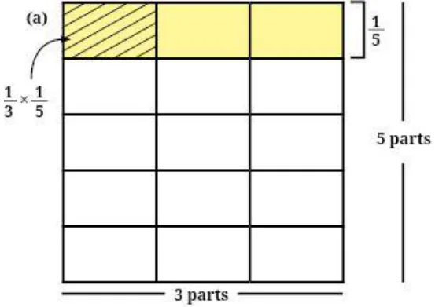

Page No. 176
Figure it out
- 1.Tenzin drinks \(\frac{𝟏}{𝟐}\) glass of milk every day. How many glasses of milk
does he drink in a week? How many glasses of milk did he drink in the month of January?
Ans: Quantity of milk that Tenzin drinks in a week \(= \frac{7}{2}\) glasses. Quantity of milk Tenzin drinks in the month of January which has 31 days \(= \frac{31}{2}\) glasses.
- 2.A team of workers can make 1 km of a water canal in 8 days. So, in one
day, the team can make ___ km of the water canal. If they work 5 days a week, they can make ___ km of the water canal in a week. Ans:
Length of water canal made in 1 day \(= \frac{1}{8}\) km. Length of water canal made in 5 days \(= \frac{5}{8}\) km.
- 3.Manju and two of her neighbours buy 5 litres of oil every week and
share it equally among the 3 families. How much oil does each family get in a week? How much oil will one family get in 4 weeks? Ans:
Oil each family gets in 1 week \(= \frac{5}{3}\) litres. Oil each family gets in 4 weeks \(= \frac{20}{3}\) litres.
- 4.Safia saw the Moon setting on Monday at 10 pm. Her mother, who is a
scientist, told her that every day the Moon sets \(\frac{𝟓}{𝟔}\) hour later than the
previous day. How many hours after 10 pm will the moon set on Thursday? Ans:
Time at which the moon sets on Thursday (i.e. 3 days after Monday)
\(= 10 + 2 + \frac{1}{2} = 12 \frac{1}{2}\) am Or 12:30 am
Page No. 177
- 5.Multiply and then convert it into a mixed fraction:
- (a)\(7 \times \frac{𝟑}{𝟓}\)
Ans: \(7 \times \frac{3}{5} = \frac{21}{5} = 4 \frac{1}{5}\)
- (b)\(4 \times \frac{𝟏}{𝟑}\)
Ans: \(4 \times \frac{1}{3} = \frac{4}{3} = 1 \frac{1}{3}\)
- (c)\(\frac{𝟗}{𝟕} \times 6\)
Ans: \(\frac{9}{7} \times 6 = \frac{54}{7} = 7 \frac{5}{7}\)
- (d)\(\frac{𝟏𝟑}{𝟏𝟏} \times 6\)
Ans: \(\frac{13}{11} \times 6 = \frac{78}{11} = 7 \frac{1}{11}\)
Page No. 180
Figure it out
- 1.Find the following products. Use a unit square as a whole for
representing the fractions:
- (a)\(\frac{𝟏}{𝟑} \times \frac{𝟏}{𝟓}\)

Ans: \(\frac{1}{15}\)